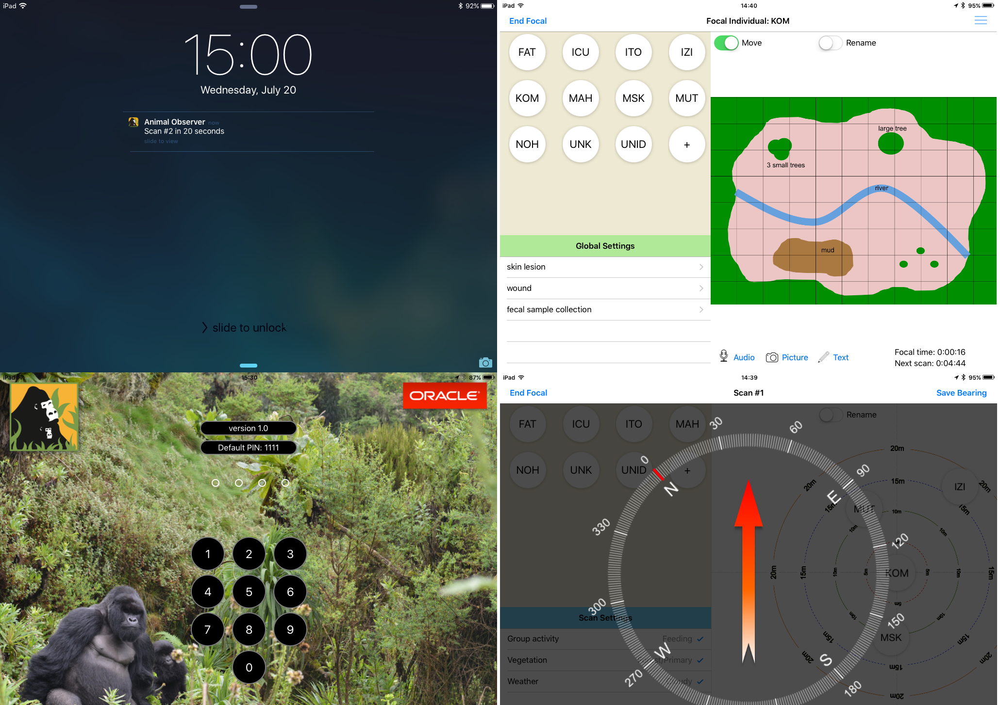

Current Features of Animal Observer
User-Specific Pin Codes: If several users share the same device, each user can have an individual 4-digit pin code.
GPS Feature: If 'Use GPS' is switched to ON, the app will record GPS coordinates (latitude, longitude, altitude, precision) each time a new behavior is recorded, each time a scan is recorded and each time a text comment is entered. Not all iPads are GPS enabled, so we recommend pairing your iPad with a bluetooth GPS. Several models are available on the market. The Fossey Fund currently uses the Garmin GLO and it works very well.
Use Compass Feature: If you turn this feature on, you will be able to enter the compass bearing of your focal individual at the end of each scan. Combined with the GPS data, this feature can be used to calculate the lat/long coordinates of all the individuals you are observing. This type of data can then be used to study individual movement patterns (who is at the front of the group, who walks behind...etc). This function is of course automatically disabled if Map Mode is ON.
Map Mode: In this mode, the typical background (target with circles at varying distances) is replaced by an image of your choice in .png format. If this image is a map of a small study area (e.g., forest clearing visited by gorillas, water point in the savanna, enclosure in a sanctuary or a zoo), you will be able to use your scan data to look at which areas of your map are used most or least frequently by each of your study individuals. The map’s width (in meters) can be adjusted using AO Toolbox. In Map Mode, the focal individual is of course not automatically placed at the center of this scene.
Global Settings: Can be used for any global variable that needs to be recorded during the focal animal sampling period. You can for example use this feature to record health data on the focal animal, or save the identity of individuals that you collected biological samples from. Importantly, you do not have to fill in all the fields in Global Settings.
Multimedia Comments: At the bottom of the scene, three buttons allow recording videos, photos, voice or written comments. All three are time stamped, and when written comments are saved, the current GPS coordinates are also recorded.
Screen Off Options: If you wish to conserve power and turn your screen off while your study animals are napping, the app will send you an alert when the scan time is approaching. The alert is timed for 20 seconds in advance and there is an optional warning sound along with it. If you have a bluetooth watch paired with the iPad, the alert will appear on the watch as well. Make sure you turn the screen back on during this 20 seconds if you don't want to miss the coming scan!
Collected data can be transferred to your computer using the iPads cable or wirelessly and converted to excel-compatible CSV format using AO Toolbox.